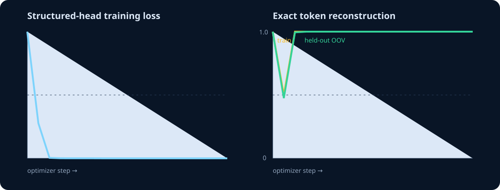
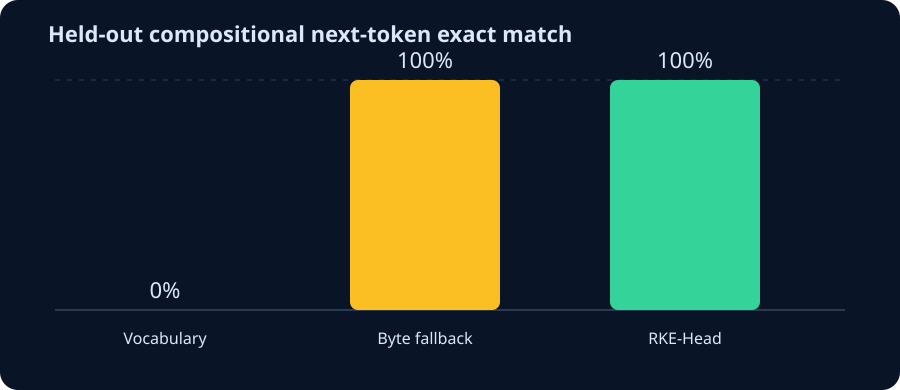
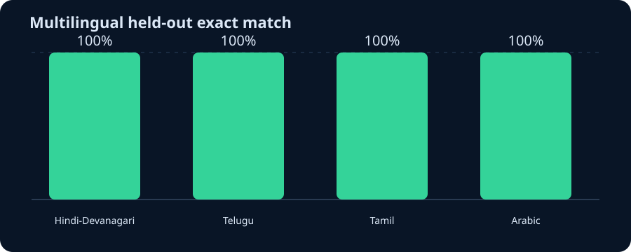

Reverse the Kronecker pathway.
RKE-Head predicts an ordered position × symbol code instead of vocabulary logits. EOS makes the code injective; argmax per slot makes it directly decodable.

Falsifiable evidence
| Claim | Result |
|---|---|
| Injective codec on tested domain | True |
| Long-prefix collision removed | True |
| Neural OOV exact match ≥ 90% | True |
| No vocabulary-sized final matrix | True |
V2 next-token follow-up
The matched language-model experiment compares vocabulary softmax, autoregressive byte fallback, and parallel RKE output. RKE held-out exact match: 100.0%. Vocabulary held-out exact match: 0.0%.

Machine-readable LM results · Comparison chart
{kind=link}
Full-byte multilingual check
Hindi/Devanagari, Telugu, Tamil and Arabic held-out exact match: 100.0%; constrained invalid UTF-8: 0.0%.

Multilingual metrics · Every prediction
Natural-corpus production pilot
On real Wikipedia-derived held-out text, causal RKE exact match is 17.88% versus 17.88% for byte fallback. Causal RKE byte/EOS NLL is 1.804 versus 1.796. The predefined within-5% quality gate is met. Masked one-pass RKE reaches 18.62% exact and 2.140 NLL; two-pass refinement reaches 17.25% and 2.255.
Natural-corpus metrics · Production readiness
All numbers are generated by python3 S7/run_experiment.py. See README.md and results.json for definitions and limitations.